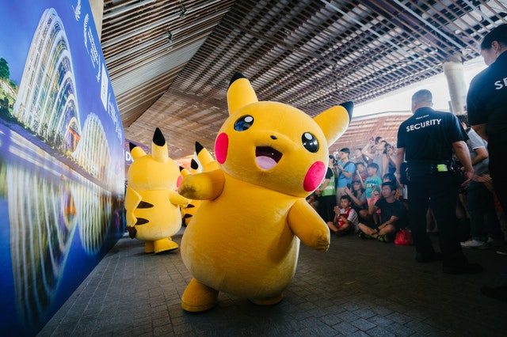

Pikachu is a yellow, furry, electric Pokemon. Pikachu is the mascot of the Pokemon franchise and is also one of the major mascots for Nintendo. Pikachu can be seen all over the world, appearing in original Pokemon video games and trading cards, on clothing, as stuffed animals, and even as life size costumes.

Photo by mentatdgt from Pexels

Photo by Xabi Vazquez from Wikimedia